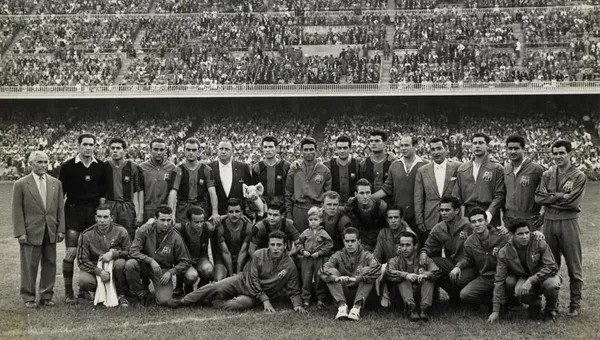
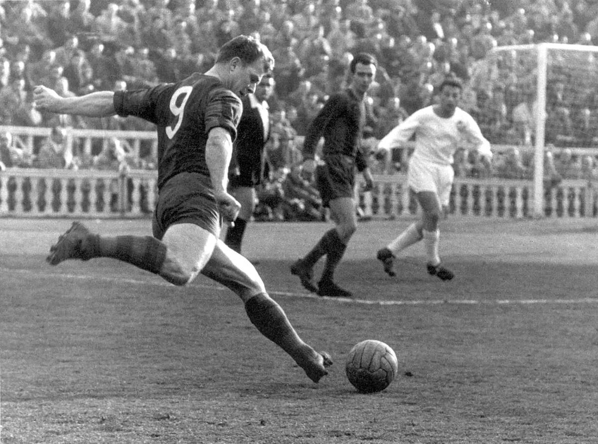
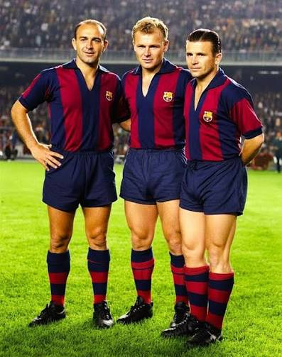
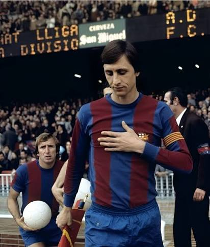
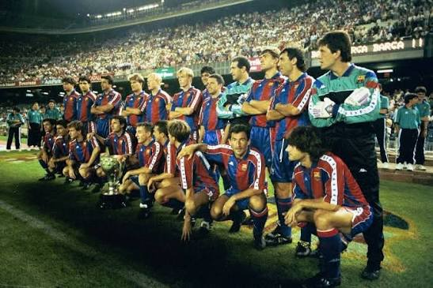
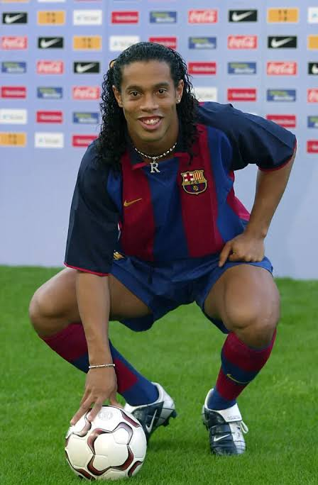
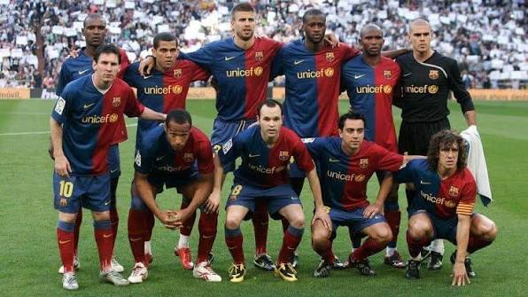
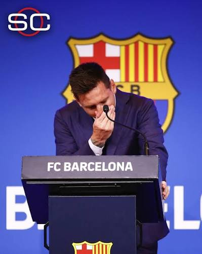

1. El nacimiento de una identidad y la era de la supervivencia (1899 - 1922)
Al final del siglo XIX, el fútbol era un deporte prácticamente desconocido en la península ibérica. Hans Gamper (quien adoptaría el nombre catalanizado de Joan) era un entusiasta deportista suizo recién establecido en Barcelona. Él colocó un anuncio en la revista Los Deportes el 22 de octubre de 1899 solicitando jugadores para formar un club de fútbol.

El acta fundacional y los pioneros
El 29 de noviembre de 1899, Gamper se reunió en el Gimnasio Solé con once hombres: Walter Wild, Lluís d'Ossó, Bartomeu Terradas, Otto Kunzle, Otto Maier, Enric Ducal, Pere Cabot, Carles Pujol, Josep Llobet, John Parsons y William Parsons. Aquella noche firmaron el acta fundacional del club. El suizo Walter Wild fue nombrado primer presidente por ser el de mayor edad. Los colores azul y grana se adoptaron en las primeras reuniones.
- Imitación del FC Basilea, equipo suizo donde jugó Gamper.
- Lápices de contabilidad bicolores usados por los fundadores en sus empresas textiles.
Durante su primera década, el Barcelona careció de terreno propio y deambuló por campos de alquiler: el Velódromo de la Bonanova, el campo del Hotel Casanovas y la carretera de Horta. En 1908 el club cayó en una profunda crisis deportiva e institucional, quedando con apenas 38 socios y al borde de la disolución. Gamper dio un paso al frente y asumió la presidencia por primera vez. Logró reactivar la masa social, recuperar la economía e inaugurar en 1909 el primer campo en propiedad de la entidad: el Camp del Carrer Indústria, conocido popularmente como "L'Escopidora".
Este recinto tenía una tribuna de dos pisos única en el país. Como el público se sentaba en el muro exterior, los transeúntes de la calle veían sus traseros alineados, dando origen al apodo popular culés.
2. La época dorada de Les Corts y la represión política (1922 - 1950)
La masa social creció exponencialmente, obligando al club a dar un salto arquitectónico masivo.
La inauguración de Les Corts y los primeros ídolos
El 20 de mayo de 1922 se inauguró el Campo de Les Corts, apodado "la catedral del fútbol", con una capacidad inicial para 30,000 espectadores. Bajo el mando técnico del inglés Jack Greenwell, el club vivió su primera edad de oro. Emergió una plantilla legendaria: el guardameta Ricardo Zamora, el carismático centrocampista Josep Samitier y el hispano-filipino Paulino Alcántara, quien anotó 395 goles en 399 partidos. Barcelona se proclamó campeón de la primera edición de la Liga española en la temporada 1928-1929.

Cronología de estadios históricos: Carrer Indústria (1909-1922) ➔ Les Corts (1922-1957) ➔ Camp Nou (1957-Presente)
Persecución, guerra y censura
En junio de 1925, bajo la dictadura de Primo de Rivera, los aficionados de Les Corts abuchearon la marcha real española. El régimen clausuró el estadio por seis meses y forzó la dimisión de Joan Gamper. Sumido en una profunda depresión y ahogado por problemas económicos tras el crac del 29, Gamper se suicidó el 30 de julio de 1930.
Durante la Guerra Civil (1936-1939), el club sufrió golpes devastadores. En agosto de 1936, el presidente del club y diputado republicano, Josep Suñol, fue fusilado por las tropas franquistas en la sierra de Guadarrama. En 1938, un bombardeo de la aviación fascista italiana destruyó la sede social del club. Con la instauración del régimen franquista en 1939, el nuevo gobierno intervino la institución:
- Se forzó la castellanización del nombre a Club de Fútbol Barcelona.
- Se obligó a suprimir las cuatro barras de la bandera catalana de su escudo oficial.
- Se impusieron presidentes designados por las autoridades deportivas gubernamentales.
A pesar de la opresión, el equipo se reconstruyó lentamente en la década de 1940, conquistando las ligas de 1945, 1948 y 1949 gracias a figuras como César Rodríguez y Mariano Martín.
3. El fenómeno de Ladislao Kubala y el nacimiento del gigante (1950 - 1973)
En 1950, el cazatalentos Josep Samitier logró el fichaje de un prófugo de los regímenes comunistas de Europa del Este: el húngaro Ladislao Kubala.

El Barça de las Cinco Copas
Kubala poseía unas condiciones físicas y técnicas inéditas para la época: protección de balón, regate en seco, disparo potente y maestría en el cobro de faltas con rosca. En la temporada 1951-1952, bajo la dirección del técnico Fernando Daucík, el Barcelona firmó un año perfecto al conquistar cinco títulos en un solo curso: la Liga, la Copa del Generalísimo, la Copa Latina, la Copa Eva Duarte y la Copa Martini & Rossi.
El equipo, con astros como Antoni Ramallets, Estanislau Basora y Joan Segarra, se convirtió en un mito popular celebrado en canciones por artistas como Joan Manuel Serrat.
El Camp Nou y la crisis financiera de los sesenta
El fervor popular desbordó la capacidad de Les Corts. La directiva liderada por Francesc Miró-Sans ordenó la construcción de un nuevo estadio. El Camp Nou fue inaugurado el 24 de septiembre de 1957 con cerca de 90,000 localidades. El coste real de la obra cuadruplicó el presupuesto inicial, sumiendo al club en una asfixiante deuda económica que duraría más de una década.
Para paliar la crisis, el club vendió a su estrella emergente Luis Suárez al Inter de Milán en 1961. Ese mismo año, el Barça sufrió la dolorosa derrota en la final de la Copa de Europa en Berna frente al Benfica (3-2). En aquel partido, los delanteros azulgranas estrellaron cuatro balones en unos postes cuadrados; la FIFA cambió la reglamentación internacional adoptando postes redondos. Los años sesenta se convirtieron en una época de sequía liguera, donde el club se refugió en la conquista de Copas del Generalísimo (1963, 1968) y Copas de Ferias (1958, 1960, 1966).
4. La llegada de Cruyff jugador y la modernización institucional (1973 - 1988)
En el verano de 1973, el Barcelona contrató a Johan Cruyff, estrella del Ajax y capitán de los Países Bajos, rompiendo los récords de traspasos de la época.

La Liga de 1974 y la transición democrática
Cruyff transformó radicalmente la mentalidad del club, inyectando un espíritu ganador y un juego dinámico de ataque. En su primera temporada (1973-1974), el Barcelona protagonizó una remontada histórica en la clasificación liguera. El equipo se coronó campeón de liga tras catorce años de frustraciones.
Con la muerte de Franco y la transición democrática, el club recuperó oficialmente su denominación fundacional Fútbol Club Barcelona y restauró las cuatro barras originales de su escudo. En 1978 se celebraron las primeras elecciones democráticas a la presidencia, resultando ganador el empresario Josep Lluís Núñez, quien inició el mandato presidencial más largo en la historia del club (1978-2000).
El nacimiento de La Masia
En octubre de 1979, Núñez inauguró La Masia de Can Planes, transformando una antigua residencia de labranza en un hogar-residencia para jóvenes futbolistas. Esta decisión cimentó el futuro deportivo de la institución y unificó criterios de entrenamiento desde la base hasta el primer equipo.
Durante los años ochenta llegaron figuras como Diego Armando Maradona (1982) y Bernd Schuster, pero lesiones y conflictos limitaron el palmarés a una sola Liga (1984-1985) bajo la dirección de Terry Venables.
5. El "Dream Team" y la revolución del Fútbol Total (1988 - 1996)
En 1988, tras la grave crisis interna del "Motín del Hesperia", Johan Cruyff regresó como entrenador y desató una revolución integral.

Filosofía táctica y hegemonía nacional
Cruyff desterró el fútbol físico y defensivo predominante en España e implantó el sistema del "fútbol total". Rompió los esquemas tradicionales usando un 3-4-3, priorizando la posesión, presión alta y salida limpia desde el portero. Colocó a Pep Guardiola como el eje organizador del centro del campo.
El equipo fue bautizado como el Dream Team y contaba con figuras como Hristo Stoichkov, Ronald Koeman, Michael Laudrup y Romário. El Barça conquistó cuatro ligas consecutivas entre 1991 y 1994.
La gloria eterna de Wembley
El 20 de mayo de 1992, en Wembley, el Barcelona venció a la Sampdoria en la final de la Copa de Europa. Un gol de Ronald Koeman en el minuto 112 certificó la primera Copa de Europa del club, rompiendo un maleficio histórico.
6. Transición institucional, Ronaldinho y el resurgimiento (1996 - 2008)
Tras Cruyff, el club vivió años de transición con Bobby Robson y Louis van Gaal. El año 2000 trajo la crisis institucional de la marcha de Luis Figo y la dimisión del presidente Josep Lluís Núñez.
Joan Gaspart (2000-2003) hundió al club financieramente. En 2003 fue elegido Joan Laporta, quien fichó a Frank Rijkaard y a Ronaldinho Gaúcho.

El efecto Ronaldinho y la corona de París
Ronaldinho devolvió la magia al Camp Nou. Con Eto'o, Deco, Márquez y Puyol, el Barcelona ganó las ligas de 2005 y 2006 y conquistó la Champions de 2006 en París, venciendo al Arsenal 2-1.
7. La era del "Pep Team" y el dominio absoluto (2008 - 2021)
En 2008 Josep Laporta nombró entrenador a Pep Guardiola. Este modernizó al club con un estilo asociativo radical, basado en la posesión y el juego de toque.

El Sextete perfecto (2009)
Guardiola limpió el vestuario y situó a Lionel Messi como líder. El Barcelona ganó Liga, Copa del Rey, Champions, Supercopa de España, Supercopa de Europa y Mundial de Clubes en 2009, logrando el Sextete.
El podio del Balón de Oro 2010
En 2010 los tres finalistas del Balón de Oro fueron canteranos del club: Messi, Iniesta y Xavi. Fue un hito inédito para cualquier cantera futbolística.
El segundo triplete (2015)
Con Luis Enrique y la MSN (Messi, Suárez, Neymar), el Barcelona ganó el segundo triplete en 2015, incluyendo la Champions ante la Juventus en Berlín.
8. Crisis institucional, el adiós de Messi y la reconstrucción (2021 - presente)
La gestión de Bartomeu llevó al club a una crisis económica y deportiva. En 2021 Joan Laporta regresó como presidente, pero la deuda y los límites salariales impidieron la continuidad de Messi.

El 5 de agosto de 2021 Messi abandonó el club tras 21 años, 778 partidos y 672 goles. El Barcelona inició una etapa de reconstrucción con un nuevo proyecto deportivo y el plan arquitectónico Espai Barça.